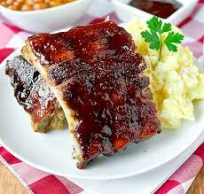

The history of barbeque ribs
Ribs were originally the worst part of a pig and were considered a poor persons food. In the early 1600's poor people in the carribean islands started making ribs taste good by cooking them for long times over low heat. The recipe eventually traveled north via Spanish Conquistadors, making its way to the US.These were eventualy adapted and refined into the ribs we know today.
Ingredients
- 1 tablespoon of paprika
- 1/8 a cup of brown sugar
- Barbeque sauce
- 1 tablespon of cumin
- 2 teaspoons salt
- 1 teaspoon of salt
How to prepare your ribs:
- Preheat your grill to 250
- Take the membrane off the ribs
- Mix the dry ingredients in a bowl
- Apply the dry rub to the ribs and thoughouly rub it in making sure to not miss a spot
- Throw your ribs on the grill for 3 and a half hours
- Turn up the heat and apply barbeque, letting it tack up
- Take them off the grill and let them rest for 15 minutes
